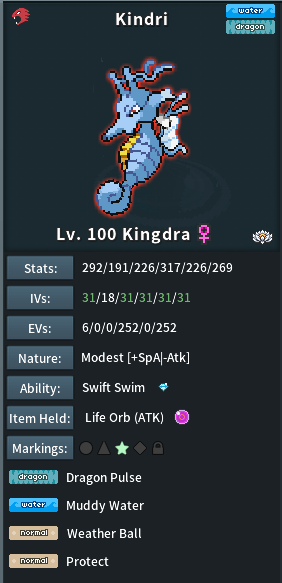

Tip: Use the default PokeMMO theme for best OCR accuracy
Drag & drop screenshots and/or videos here
Or paste a screenshot from your clipboard (Ctrl/Cmd + V).
✅ Allowed
Multiple images (PNG/JPG/WebP)
Multiple videos (MP4/WebM/MOV)
❌ Not allowed
ZIP / folders / PDFs
💡 Tip
Use the default PokeMMO theme
1 Pokémon per screenshot
🎞️
Unique Frame Extractor
Drag on the preview to select a small region (often the Pokémon name area). A frame is captured whenever that region changes — then the frames can be fed into this OCR tool.
Preview (drag to select region)
Captured: 0
Progress
Logged frames
Settings
Choose a video, then drag on the preview to select a region.
6
Lower = more frames. If you get duplicates, raise it slightly. If you miss Pokémon, lower it.
Step 2
Extract
After extraction you can OCR, send to Firestore (debug), or download ZIPs.
Step 3
Choose what to do
Use Whole when the video contains only the Pokémon screen. Use Selection when the video contains other content (e.g. you recorded your whole screen).
Mon
File
Nickname
Pokemon
Item
Ability
Level
Nature
EVs
IVs
Moves
PokePaste
Debug
No results yet. Drop screenshots above or choose files.
Expected formats (Screenshot & Video)
Upload screenshots, videos, or a mix of both.
Tip: you can also paste screenshots from clipboard (Ctrl/Cmd+V)
Screenshot: ideal layout
PNG/JPG/WebP • one Pokémon per image

Best results come from the Pokémon PC preview / summary screen with all stats visible.
Video: what to record
MP4/WebM/MOV • multiple videos supported
The tool samples frames and keeps only unique Pokémon screens.
Hints for best OCR
✅ Do this
Use the default PokéMMO theme
Keep one Pokémon per screenshot
Ensure Level / Nature / Item / Ability are visible
Make sure EVs + IVs + Moves are fully on-screen
Prefer consistent resolution across uploads
❌ Avoid this
Don’t include chat windows or UI overlays
Don’t crop too tightly (leave UI context)
Don’t upload ZIP/PDF(images/video only)
🎞️ Video tips
Pause ~ 1 second on each Pokémon screen
Record only the Pokémon summary from the PC menu
Record at a readable resolution (720p+ recommended)
⚙️ Frame Extractor
If you recorded a full video instead of taking screenshots, you can use the
Extract frames button to automatically detect when a new Pokémon appears.
The extractor works by comparing a selected region of the video and saving a frame whenever that region changes — meaning you get one image per Pokémon instead of hundreds of duplicate frames.
For best results select the area of the Pokémon Summary and adjust the difference threshold if too many or too few frames are saved.
After extraction, you can send the frames directly to OCR or download them as ZIP.
If results look off, try re-capturing with the default theme and without overlays.